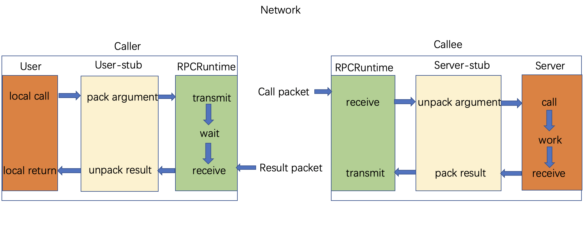

随着时间的流逝，进程间通信技术已经发生了巨大的发展。出现了各种这样的技术来满足现代需求并提供更好和更有效的开发体验。让我们看一些最常用的进程间通信技术，并与 gprc 做个比较。
常规 RPC
RPC 是用于构建客户服务应用程序的流行的进程间通信技术。使用 RPC，客户端可以远程调用方法，就像调用本地方法一样。早期有流行的 RPC 实现，例如通用对象请求代理体系结构（CORBA）和 Java 远程方法调用（RMI），它们用于构建和连接服务或应用程序。但是，大多数此类常规 RPC 实现极其复杂，因为它们建立在诸如 TCP 之类的通信协议之上，这阻碍了不同程序间的交互，而且各自的规范很臃肿。
RPC（Remote Procedure Call）—远程过程调用，是指计算机程序使过程（子程序）在不同的地址空间（通常在共享网络的另一台计算机上）执行时，其编码就像是普通的（本地）过程调用，无需程序员为远程交互明确编码细节。
RPC 是进程间通信（IPC）的一种形式，因为不同的进程具有不同的地址空间：如果在同一主机上，即使物理地址空间相同，它们也具有不同的虚拟地址空间（Java 虚拟机）；如果它们位于不同的主机上，则物理地址空间是不同的。为了让不同的客户端访问服务器，已经创建了许多标准化的 RPC 系统。其中大多数使用接口描述语言（IDL）来让各种平台调用 RPC。可以使用 IDL 文件生成代码以在客户端和服务器之间建立接口。
在面向对象的编程范例中，RPC 调用由远程方法调用（RMI）表示。
该协议介于 OSI 网络模型的应用层和传输层，这里就要说下 RPC 协议主要内容。
实现 RPC 主要分为 5 个部分：
- User
- User-stub
- RPCRuntime
- Server-stub
- Server
这里 user 就是 client 端，当 user 想发起一个远程调用时，它实际是通过本地调用 user-stub。user-stub 负责将调用的接口、方法和参数通过约定的协议规范进行编码并通过本地的 RPCRuntime 实例传输到远端的实例。远端 RPCRuntime 实例收到请求后交给 server-stub 进行解码后发起本地端调用，调用结果再返回给 user 端。
网络层传输并没有明确的规定，所以就有基于 HTTP/2 的 gRPC，但是大多数还是直接使用 TCP 协议直接传输的。传输的内容格式也没有明确规定，JSON/XML/套接字都有可能。
SOAP
由于诸如 CORBA 之类的常规 RPC 实现的局限性，微软，IBM 等大型企业设计并大力推广了简单对象访问协议（SOAP）。SOAP 是面向服务的体系结构中的标准通信技术（SOA）以在服务（在 SOA 上下文中通常称为 Web 服务）之间交换基于 XML 的结构化数据，并通过任何基础通信协议（例如 HTTP（最常用））进行通信。使用 SOAP，您可以定义服务接口，该服务的操作以及用于调用这些操作的关联 XML 消息格式。 SOAP 是一种非常流行的技术，但是消息格式的复杂性以及围绕 SOAP 构建的规范的复杂性阻碍了构建分布式应用程序的敏捷性。 因此，在现代分布式应用程序开发的上下文中，SOAP Web 服务被认为是一种遗留技术。 现在，大多数现有的分布式应用程序都在使用 REST 体系结构样式来开发，而不是使用 SOAP。
REST
表现层状态转化（REST）是一种架构风格， REST 是面向资源的体系结构（ROA）的基础，您可以在其中将分布式应用程序建模为资源的集合，访问这些资源的客户端可以更改这些资源的状态（创建，读取，更新或删除）。
REST 的实际实现是 HTTP，在 HTTP 中，您可以将 RESTful Web 应用建模为使用唯一标识符（URL）可访问的资源的集合。 状态更改操作以 HTTP 谓词（GET，POST，PUT，DELETE，PATCH等）的形式应用于这些资源之上。 资源状态以文本格式表示，例如 JSON，XML，HTML，YAML 等。
使用具有 HTTP 和 JSON 的 REST 架构风格构建应用程序已成为构建微服务的实际方法。 但是，随着微服务及其网络交互的数量激增，RESTful 服务无法满足预期的现代要求。 RESTful 服务有几个关键限制，这些限制限制了将它们用作基于现代微服务的应用程序的消息传递协议的能力。
低效的基于文本的消息协议
RESTful 服务本质上是建立在基于文本的传输协议（例如 HTTP 1.x）的基础之上的，并利用了人类可读的文本格式（例如 JSON）。 当涉及到服务之间的通信时，使用文本格式（例如 JSON）效率很低，因为该通信的双方都不需要使用这种人类可读的文本格式。
客户端应用程序（源）生成要发送到服务器的二进制内容，然后将二进制结构转换为文本（因为使用 HTTP 1.x，您必须发送文本消息）并通过网络以文本形式（通过 HTTP）发送它到一台机器，该机器在服务（目标）端解析并将其转换为二进制结构。 相反，我们可以轻松地发送二进制格式，该格式可以映射到服务和消费者的业务逻辑。 使用 JSON 的一种流行说法是，它易于使用，因为它是“人类可读的”。 这不是二进制协议的问题，而是更多的工具问题。
应用之间缺乏强类型接口
随着使用完全不同的多语言技术构建的通过网络进行交互的服务的数量不断增加，缺乏明确定义和强类型化的服务定义是一个主要的挫折。 我们在 RESTful 服务中拥有的大多数现有服务定义技术（例如 OpenAPI / Swagger）都是经过深思熟虑的，并未与基础架构样式或消息传递协议紧密集成。
在构建此类分散式应用程序时，这会导致许多不兼容性，运行时错误和互操作性问题。 例如，当您开发 RESTful 服务时，不需要具有在应用程序之间共享的信息的服务定义和类型定义。 相反，您可以在网上查看文本格式或第三方 API 定义技术（例如 OpenAPI）来开发 RESTful 应用程序。 因此，具有现代强类型服务定义技术和为多语言技术生成服务器端和客户端代码核心的框架是关键必要条件。
REST 架构风格难以实施
作为一种体系结构样式，REST 具有很多“良好实践”，您需要遵循这些“良好实践”才能提供真正的 RESTful 服务。 但是，它们不是作为实施协议（例如 HTTP）的一部分实施的，这使得在实施阶段很难实施它们。 因此，在实践中，大多数声称为 RESTful 的服务并未正确遵循 REST 风格的基础。 因此，大多数所谓的 RESTful 服务仅仅是通过网络公开的 HTTP 服务。 因此，开发团队必须花费大量时间来维护 RESTful 服务的一致性和纯度。
由于进程间通信技术在构建现代云本机应用程序中存在所有这些局限性，因此开始寻求发明更好的消息协议。
gRPC 的诞生
Google 一直在使用一种称为 Stubby 的通用 RPC 框架来连接成千上万的微服务，这些微服务跨多个数据中心运行并使用不同的技术构建，它的核心 RPC 层旨在处理每秒数百亿个请求的互联网规模。 Stubby 具有许多出色的功能，但由于它与 Google 内部基础架构紧密相关，因此尚未标准化用作通用框架。
2015 年，Google 发布了 gRPC 作为开源 RPC 框架； 它是一个标准化的，通用的，跨平台的 RPC 基础结构。 gRPC 旨在提供与 Stubby 相同的可伸缩性，性能和功能，但可以为整个社区提供。
从那时起，随着 Netflix，Square，Lyft，Docker，Cisco 和 CoreOS 等主要公司的大规模采用，gRPC 的普及在过去几年中急剧增长。 后来，gRPC 加入了 Cloud Native Computing Foundation（CNCF），这是最受欢迎的开源软件基金会之一，致力于使云原生计算具有通用性和可持续性。 gRPC 从 CNCF 生态系统项目中获得了很大的吸引力。
为什么选择 gRPC
gRPC 被设计为一种互联网规模的进程间通信技术，可以克服常规进程间通信技术的大多数缺点。由于 gRPC 的优势，大多数现代应用程序和服务器越来越多地将其进程间通信协议转换为 gRPC。那么，当有很多其他选项可用时，为什么有人会选择 gRPC 作为通信协议呢？ 让我们更仔细地看一下 gRPC 带来的一些关键优势
gRPC 的优点
gRPC 带来的优势是 gRPC 越来越被采用的关键。 这些优点包括：
- 高效的进程间通信
gRPC 不使用 JSON 或 XML 之类的文本格式，而是使用基于协议缓冲区的二进制协议与 gRPC 服务和客户端进行通信。 同样，gRPC 在 HTTP / 2 之上实现协议缓冲区，这使得进程间通信的速度甚至更快。 这使 gRPC 成为最高效的进程间通信技术之一。
- 它具有简单，定义明确的服务接口和架构
gRPC 促进了合同优先的方法来开发应用程序。 您首先定义服务接口，然后再处理实现细节。 因此，与用于 RESTful 服务定义的 OpenAPI / Swagger 和用于 SOAP Web 服务的 WSDL 不同，gRPC 提供了简单但一致，可靠，可扩展的应用程序开发体验。
- 它是强类型的
由于我们使用协议缓冲区定义 gRPC 服务，因此 gRPC 服务协定明确定义了将用于应用程序之间通信的类型。 这使分布式应用程序开发更加稳定，因为静态类型有助于克服在构建跨多个团队和技术的云本机应用程序时遇到的大多数运行时和互操作性错误。
- 多语言支持
gRPC 旨在与多种编程语言一起使用。 带有协议缓冲区的 gRPC 服务定义与语言无关。 因此，您可以选择自己喜欢的语言，但可以与任何现有的 gRPC 服务或客户端进行互操作。
- 它具有双工流
gRPC 具有对客户端或服务器端流的本机支持，该支持包含在服务定义本身中。 这使开发流服务或流客户端变得更加容易。 与传统的 RESTful 消息传递样式相比，构建常规的请求-响应样式消息传递以及客户端和服务器端流传输的能力是一个关键优势。
- 它具有内置产品功能
gRPC 为产品提供内置支持，例如身份验证，加密，弹性（最后期限和超时），元数据交换，压缩，负载平衡，服务发现等。
- 它与云原生生态系统集成
gRPC 是 CNCF 的一部分，大多数现代框架和技术都提供了对 gRPC 的本地支持。 例如，CNCF 下的许多项目（例如 Envoy）都支持 gRPC 作为通信协议。 对于指标和监控等跨领域功能，大多数此类工具都支持 gRPC（例如，使用 Prometheus 监控 gRPC 应用程序。
- 它已经成熟并被广泛采用
gRPC 通过在 Google 上进行的艰苦的测试而变得成熟，许多其他大型科技公司（例如 Square，Lyft，Netflix，Docker，Cisco 和 CoreOS）都采用了 gRPC 。
与任何技术一样，gRPC 也具有某些缺点。 在应用程序开发期间了解这些缺点非常有用。 因此，让我们看一下 gRPC 的一些局限性。
gRPC 的缺点
在选择 gRPC 来构建应用程序时，需要注意一些 gRPC 的缺点。 这些包括以下内容：
- 它可能不适合外部服务
当您想通过 Internet 向外部客户端公开应用程序或服务时，gRPC 可能不是最合适的协议，因为大多数外部使用者都刚接触 gRPC 和 REST / HTTP。合同驱动的 gRPC 服务的强类型性质可能会阻碍您向外部各方公开服务的灵活性，并且消费者获得的控制权将大大降低。
- 彻底的服务定义更改是一个复杂的开发过程
模式（Schema）修改在现代服务间通信用例中非常普遍。 当 gRPC 服务定义发生重大变化时，通常我们需要为客户端和服务器重新生成代码。 这需要合并到现有的持续集成过程中，并且可能使整个开发生命周期复杂化。 但是，大多数 gRPC 服务定义更改都可以在不破坏服务合同的情况下得到满足，并且只要不引入重大更改，gRPC 就会使用不同版本的协议与客户端和服务器愉快地进行互操作。 因此在大多数情况下不需要代码重新生成。
- 生态系统比较小
与传统的 REST / HTTP 协议相比，gRPC 生态系统仍然相对较小。 浏览器和移动应用程序中对 gRPC 的支持仍处于原始阶段。
在开发应用程序时，您必须注意这些限制。 因此，显然，gRPC 不是您应该用于所有进程间通信需求的技术。 相反，您需要评估业务用例和需求并选择适当的消息传递协议。
gRPC 与其他协议：GraphQL 和 Thrift
我们已经详细讨论了 REST 的一些关键限制，这些限制为 gRPC 的诞生奠定了基础。 类似地，有许多新兴的进程间通信技术可以满足相同的需求。 因此，让我们看一些流行的技术，并将其与 gRPC 进行比较。
Apache Thrift
Apache Thrift 是一个类似于 gRPC 的 RPC 框架（最初在 Facebook 开发，后来捐赠给 Apache）。 它使用自己的接口定义语言，并支持多种编程语言。 Thrift 允许您在定义文件中定义数据类型和服务接口。 通过将服务定义作为输入，Thrift 编译器为客户端和服务器端生成代码。 Thrift 传输层为网络 I / O 提供抽象，并将 Thrift 与系统的其余部分解耦，这意味着它可以在任何传输实现（例如 TCP，HTTP 等）上运行。
如果将 Thrift 与 gRPC 进行比较，您会发现两者都遵循相同的设计和使用目标。 但是，两者之间有几个重要的区别：
- 协议
gRPC 比 Thrift 更超前，提供对 HTTP / 2 的一流支持。 它在 HTTP / 2 上的实现利用该协议的功能来实现效率并支持诸如流的消息传递模式。
- 流
gRPC 服务定义本身支持双向流（客户端和服务器），这是服务定义本身的一部分。
- 采用和社区
在采用方面，gRPC 似乎发展势头良好，并且已成功围绕 CNCF 项目建立了良好的生态系统。 同样，社区资源，例如良好的文档，外部演示文稿和示例用例，对于 gRPC 来说是很常见的，与 Thrift 相比，采用过程更加流畅。
GraphQL
GraphQL 是另一种技术（由 Facebook 发明并标准化为一种开放技术），在构建进程间通信中变得非常流行。 它是 API 的查询语言，是用于使用现有数据完成这些查询的运行时。 GraphQL 通过允许客户端确定所需的数据，所需的数据以及所需的格式，为传统的客户端-服务器通信提供了根本不同的方法。 相反，gRPC 与支持客户机和服务器之间通信的远程方法具有固定的约定。
GraphQL 更适合直接暴露给消费者的外部服务或 API，在这些环境中，客户端需要对来自服务器的数据进行更多控制。 例如，在我们的在线零售应用程序场景中，假设 ProductInfo 服务的使用者仅需要有关产品的特定信息，而不需要产品的整个属性集，并且使用者还需要一种方法来指定他们想要的信息。 借助 GraphQL，您可以对服务进行建模，从而使消费者可以使用 GraphQL 查询语言来查询服务并获取所需的信息。
在大多数 GraphQL 和 gRPC 实用的用例中，GraphQL 被用于面向外部的服务/ API，而支持 API 的内部服务是使用 gRPC 实现的。